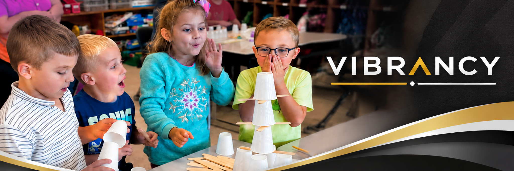

OUR SHARED VISION
A vibrant future starts here.
Six connected areas. One shared purpose: helping every learner thrive.
Every connection strengthens the learning experience.
Loading homepage updates…

OUR SHARED VISION
Six connected areas. One shared purpose: helping every learner thrive.
Every connection strengthens the learning experience.